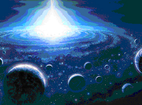
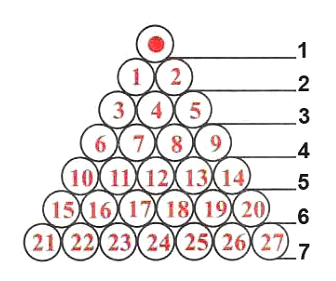
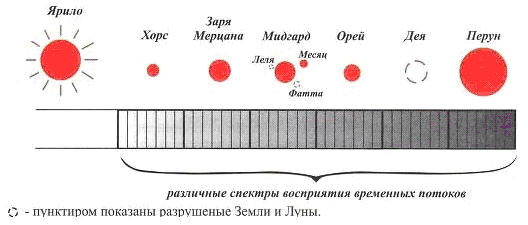
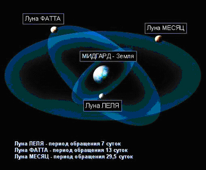

Структура Земель нашей Солнечной системы

В нашей Солнечной системе существует 27 Земель (Слово “планетос” греч.,“блуждающая звезда” наши Предки не употребляли). Современная наука открыла их только часть и продолжает открывать, а наши Предки знали все 27 Земель (тридевять из русских сказок многие помнят, т.е. три по девять = 27). Они также знали их влияние как друг на друга, так и на все формы жизни, существующие в нашей Солнечной системе.
Эта стройная Ведическая русо-арийская астрономическая система существует, до сей поры. Многие знакомы с ней через древние сказания, которые повествуют, что существуют Тридевять Земель, т.е. три системы, объединившие по девять Земель.
Наши Мудрые Предки также знали, что во Вселенной всё устроено по незыблемым Законам. Например, что масса Солнца (светила) равна массе всех Земель вращающихся вокруг него. В школьных учебниках приводится рисунок соотношения размера и масс Земель и Солнца нашей Солнечной системы, что на самом деле не соответствует действительности, потому что многие Земли и Луны ещё неизвестны современным астрономам.
До нашего времени у Староверов сохранилась своя упорядоченная система всех Земель: (Pиc. 1)

Pиc. 1
- Ярило-Солнце;
- Земли без Лун;
- Земли, имеющие по две Луны;
- Земли, имеющие более двух лун и кольца;
- Земли системы-гиганты;
- Земли системного отображения (на них идёт отражение жизни в других мерностях);
- Земли порубежного контроля. Их гравитационные системы устроены так, чтобы ни одна Земля или другое небесное тело (планета, астероид, камета) не покинуло систему Ярилы-Солнца.
Все Земли, вращаясь вокруг своей оси, излучают энергию, а ещё они вращаются вокруг Ярило-Солнца, а Ярила вращается вокруг своей оси. Они все как в замкнутом колебательном контуре, излучают тонкие виды энергий питающих Солнце, которые “проходят вовнутрь и идут вовне”. То есть, все Звёзды, Земли, Солнца, влияют на каждое небесное тело.
Предкам было ведомо также и то, что каждая Земля нашей Солнечной системы имеет свое временное значение. Все в соответствии с собственной колеблющей частотой. У каждой Земли свой спектр, своя временная структура, своя временная проекция, у Ярилы одна, у Земли Хорса другая, у Земли Деи – хаотичная, и т.д.
А раз каждый небесный объект настроен на собственную частоту, значит визуальная проекция на каждой системе (объекте) будет различна, т.е. спектр восприятия во временном потоке будет отличаться. Соответственно, чтобы запечатлеть реальный пейзаж другой Земли необходимо настроить приборы на спектр восприятия временного потока данной Земли (Pиc. 2).

Pиc. 2
Солнечная система – опять та же спираль. В центре Ярило, Земли вращаются вокруг своей оси и вокруг Ярилы, при этом энергия идет как к центру, так и вовне. Но есть еще другие Земли, и получается многослойная временная спираль. Энергия “грубая” от каждого временного потока истекает к центру и вовне и не только “грубая”, но и “тонкоматериальная”, поэтому наши Предки говорили, что другие Земли влияют на жизнь на нашей Мидгард - Земле. Временной поток энергии от Солнца проходит через другие Земли и возвращается обратно. Чем ближе какая-то из земель будет к нашей Мидгард-Земле, тем больше будет влияние её энергии. На этом строилась астрология, она доказывается обычными законами физики, проистечением тонких энергий, т.е. она имеет под собой реальную основу.
В определённое время, Земли гиганты выстраиваются в небесный парад, при этом они стягивают маленькие Земли с их орбит, а соответственно и с их спектра излучения. Смещение их гравитационными полями приводит к тому, что на Землях идет совершенно другая временная характеристика, изменяется гравитационная составляющая и температура.
У наших Предков существовала своя система классификации Небесных тел, например:
- ЗВЕЗДА – центральное светило, вокруг которого по своим путям двигается 7 и менее Земель.
- СОЛНЦЕ – центральное светило, вокруг которого по своим путям двигается более 7 Земель.
- ЗЕМЛИ – это Небесные объекты, движущиеся по своим орбитам вокруг Звёзд (или Солнц).
- ЛУНЫ – Небесные объекты, вращающиеся вокруг Земель.
- ЯРИЛА – название нашего Солнца.
- ТАРА – современное название “Полярная звезда”.
- МАКОШЬ – современное название “Большая Медведица”.
- РАДА – современное название “Орион”.
- ЗЕМУН – современное название “Малая Медведица”.
- СТАЖАР – современное название “Кассиопея”.
- МИДГАРД – название нашей Земли. Вокруг неё изначально вращались две Луны:
- ЛЕЛЯ - период обращения 7 суток (самая малая Луна), уничтожена около ста тысяч лет назад (об этом говорится в Сантиях “Веды Перуна”). Астрологи до сих пор в своих расчётах учитывают энергетическое влияние её фантома.
- МЕСЯЦ - период обращения 29,5 суток
- ФАТТА - период обращения 13 суток. После гибели Земли Деи (сейчас пояс астероидов), одна из её лун была перемещена к Мидгард Земле, и стала третьей луной. Около тринадцати тысяч лет назад была разрушена и вызвала “Ледниковый период”.
Предания о трёх лунах тоже сохранились у индусов и американских Индейцев (Pиc. 3).

Pиc. 3
Далее приведём таблицу всех Земель нашей Солнечной системы:
|
№ |
Руна |
Наименование |
Период в земных |
Чертог-Зал на |
|
|
Славяно-Арийское |
Современное |
||||
|
Земли не имеющие Лун |
|||||
|
0 |
Ярило-Солнце |
Солнце |
- |
2-1 |
|
|
1 |
Земля Хорса |
Меркурий |
0,241 з.л. (88 с) |
12-6 |
|
|
2 |
Земля Зари-Мерцаны |
Венера |
0,615 з.л. (225 с) |
2-5 |
|
|
Земли, имеющие по две Луны |
|||||
|
3 |
|
Мидгард-Земля |
Земля |
1 (365,25 с) |
10-1 |
|
4 |
|
Земля Орея |
Марс 2 |
1,881 з.л. (686,979 с) |
9-1 |
|
5 |
|
Земля Деи |
пояс астероидов |
5,25 з.л. (1917,5625 с) |
5-3 |
|
|
|||||
|
6 |
Земля Перуна |
Юпитер |
11,86 з.л. |
6-2 |
|
|
7 |
Земля Стрибога |
Сатурн |
29,46 з.л. |
9-4 |
|
|
8 |
Земля Индры |
Хирон |
58,92 з.л. |
15-2 |
|
|
9 |
Земля Варуны |
Уран |
84,02 з.л. |
6-7 |
|
|
Земли системы-гиганты |
|||||
|
10 |
Земля Ния |
Нептун |
164,79 з.л. |
7-3 |
|
|
11 |
Земля Вия |
Плутон |
248,7 з.л. |
16-3 |
|
|
12 |
Земля Велеса |
Вулкан 4 |
346,78 з.л. |
6-4 |
|
|
13 |
Земля Семаргла |
Даур 4 |
485,49 з.л. |
3-9 |
|
|
14 |
Земля Одина |
Прозерпина 4 |
689,69 з.л. |
3-3 |
|
|
Земли системного отображения |
|||||
|
15 |
Земля Лады |
Изида 4 |
883,6 з.л. |
11-9 |
|
|
16 |
Земля Удрзеца |
Осирис 4 |
1147,38 з.л. |
10-9 |
|
|
17 |
Земля Коляды |
не установлена |
1501,62 з.л. |
5-9 |
|
|
18 |
Замля Родогоста |
Вакшья (Вакша) |
1952,11 з.л. |
10-9 |
|
|
19 |
Земля Тора |
не установлена |
2537,75 з.л. |
7-8 |
|
|
20 |
Земля Прове |
не установлена |
3456 з.л. |
|
|
|
Земли порубежного контроля |
|||||
|
21 |
Земля Крода |
не установлена |
3888 з.л. |
|
|
|
22 |
Земля Полкана |
не установлена |
4752 з.л. |
|
|
|
23 |
Земля Змия |
не установлена |
5904 з.л. |
|
|
|
24 |
Земля Ругия |
не установлена |
6912 з.л. |
|
|
|
25 |
Земля Чура |
не установлена |
9504 з.л. |
|
|
|
26
|
Земля Догоды |
не установлена |
11664 з.л. |
|
|
|
27 |
Земля Дайма |
не установлена |
15552 з.л. |
|
|
1 - Состояние Земель на Сварожьем Круге на Лето 7504 СМЗХ месяца Рамхат 1-го дня на 16-ый час.
2 - У Марса (Земли Орея) период обращения вокруг Ярилы 666 марсианских суток.
3 - Люцифер – “утренняя звезда”.
4 - Название из астрономических школ.